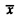
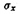
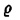

| Previous | Table of Contents | Next |
Copyright © John Wiley & Sons, Inc.
| Previous | Table of Contents | Next |
There are a number of good books on queueing theory. The classic book in this area is the first volume of Kleinrock (1975). Other good books for single queues are Gross and Harris (1985), Gelenbe and Pujolle (1987), and Cooper (1981).
Lazowska et al. (1984) provides an easy to understand treatment of queueing networks. Lavenberg (1983) provides a thorough treatment of the subject for a mathematically inclined reader. Leung (1987) provides case studies of queueing models of database and I/O subsystems. Agrawal (1985) discusses approximation techniques. Gelenbe and Mitrani (1980) and Kobayashi (1978) also discuss queueing theory and its application to computer systems.
For a derivation of Equation (31.6) for the cumulative distribution function of the response time, see Gross and Harris (1985).
A popular approximation to MVA called Linearizer is proposed by Chandy and Neuse (1982). Browne et al. (1975) discuss the application of hierarchical techniques.
| Symbol | Definition | |||
|---|---|---|---|---|
| b | Busy period duration for a server (a random variable) | |||
| B | Number of buffers (includes both waiting and serving positions) | |||
| Cx | Coefficient of variation of a random variable x | |||
| D | Total service demands on all service centers (except terminals) | |||
| Di | Total service demand on the ith service center, = ViSi | |||
| E[x] | Mean of the random variable x | |||
| fi(x) | Some arbitrary function of variable x | |||
| f(x) | Probability density function (pdf) of the random variable x | |||
| F(x) | Cumulative distribution function (CDF) of the random variable x | |||
| g(n, m) | Normalizing constant with n jobs and m service centers | |||
| G(N) | Normalizing constant with N jobs in the system, = g (N, M) | |||
| I | Idle time duration for a server (a random variable) | |||
| J | Sum of time spent by n jobs in the system | |||
| K | Population size | |||
| Lx( ) | Laplace transform of the probability generating function of the continuous random variable x | |||
| m | Number of servers in a service center | |||
| mi | Number of servers in the ith service center | |||
| M | Number of service centers in a queueing network | |||
| n | Number of jobs in the system (a random variable) | |||
| n | Vector {n1, n2, ..., nM} indicating number of jobs at various service centers | |||
| ni | Number of jobs in the ith service center | |||
| nq | Number of jobs in the queue (a random variable) | |||
| ns | Number of jobs receiving service (a random variable) | |||
| N | Number of jobs in a closed queueing network | |||
| Pn | Probability of n jobs in the system | |||
| Pik | Probability of a job moving to the kth service center after service at the ith service center | |||
| P(x) | Probability of the event x | |||
| Qi | Mean number of jobs at the ith service center | |||
| r | Response time or time in the system (a random variable) | |||
| R | Mean response time of a system | |||
| Ri | Response time of the ith service center | |||
| s | Service time (a random variable) | |||
| Si | Mean service time per visit at the ith service center | |||
| tj | Time of the jth state change | |||
| Ui | Utilization of the ith device | |||
| Var[x] | Variance of the random variable x | |||
| Vi | Number of visits to service center i | |||
| w | Time spent waiting in the queue (a random variable) | |||
|  | Mean of a random variable x = E[x] | |||
| X | System throughput | |||
| Xi | Throughput of the ith service center | |||
| Z | Average think time | |||
| β | Duration of busy interval for a server (a random variable) | |||
| λ | Arrival rate, = 1/E[τ] | |||
| λj | Arrival rate when there are j jobs in the service center | |||
| µ | Service rate, = 1/E[s] | |||
| µj | Service rate when there are j jobs in the service center | |||
| ρ | Traffic intensity | |||
| ρi | Traffic intensity at the ith service center | |||
|  | Standard deviation of the random variable x | |||
| γ | Interarrival time (a random variable) | |||
| γj | Time between the (j – 1)th and jth arrival | |||
|
| Solution of the equation  = Lτ(µ – µ) for G/M/1 queues or probability of queueing for M/M/m queues, = [(Mp)m/{m!(1 – p)}]p0
Copyright © John Wiley & Sons, Inc.
| |||